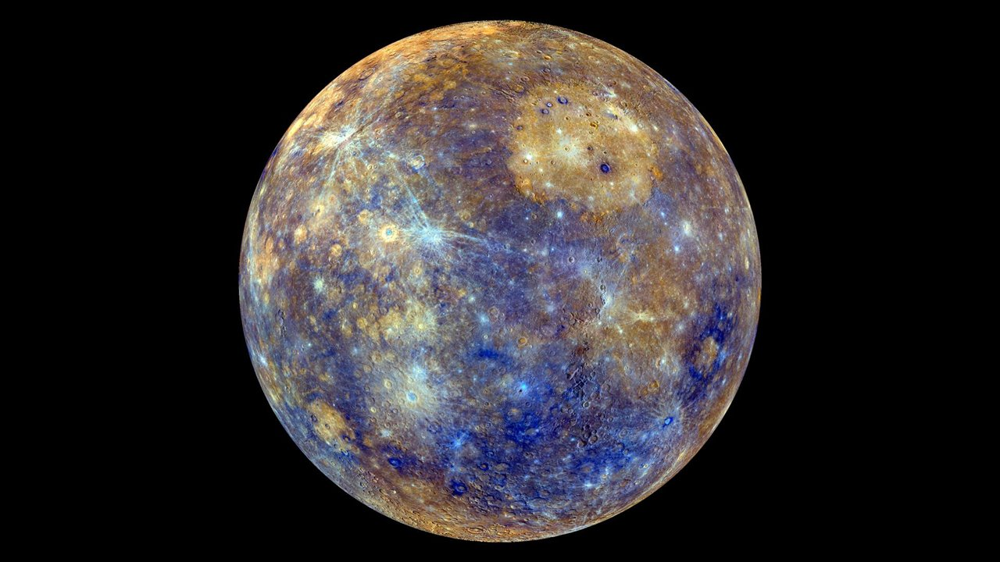
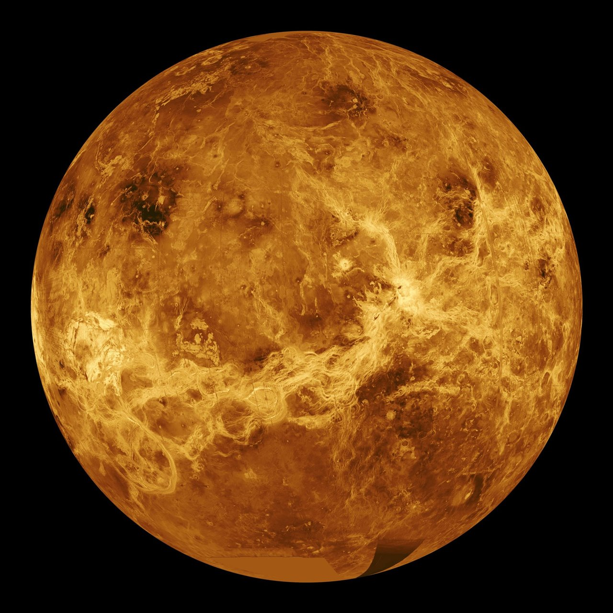
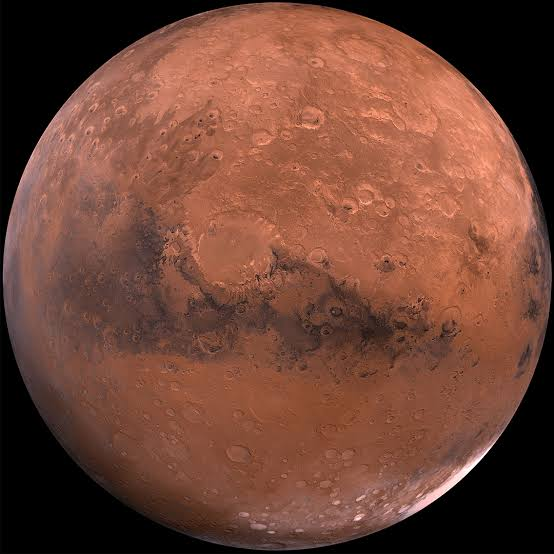
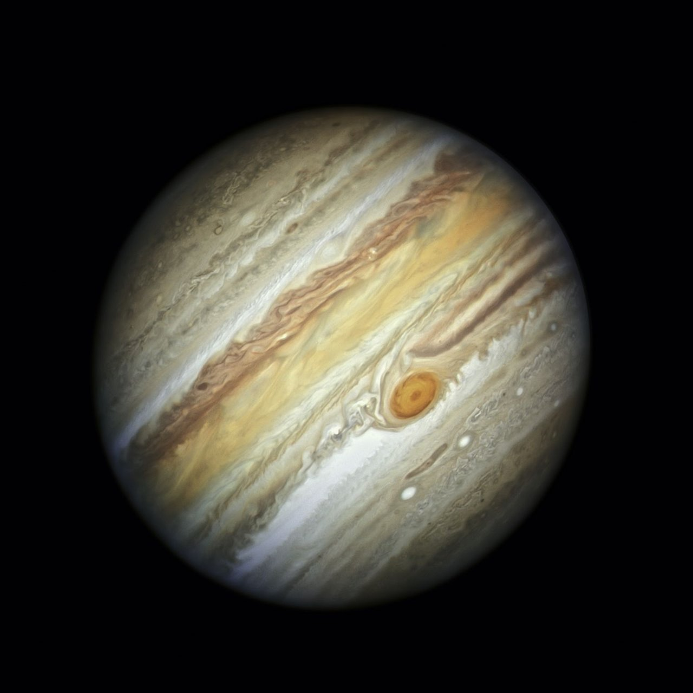
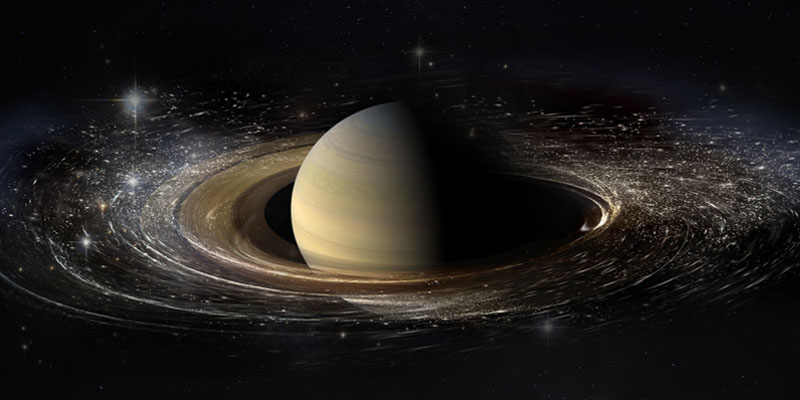
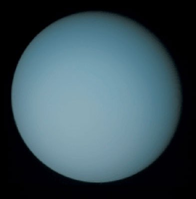
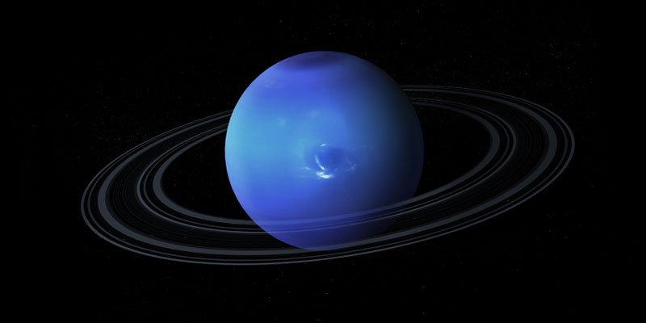

Mercurio
Rocoso
- Diámetro
- 4.879 km
- Distancia al Sol
- 57,9 millones de km
- Duración del día
- 59 días
- Duración del año
- 88 días
- Lunas
- 0
El más pequeño y el más cercano al Sol.
En millones de kilómetros.
Ordenados desde el Sol.

Rocoso
El más pequeño y el más cercano al Sol.

Rocoso
El más caliente, aunque Mercurio está más cerca del Sol.

Rocoso
El único planeta con vida conocida.

Rocoso
Tiene el volcán más alto: el Monte Olimpo.

Gigante gaseoso
Su Gran Mancha Roja es una tormenta enorme.

Gigante gaseoso
Sus anillos son de hielo y roca.

Gigante helado
Gira prácticamente tumbado de lado.

Gigante helado
Tiene los vientos más rápidos del Sistema Solar.
| Planeta | Diámetro (km) | Distancia (M km) | Día | Año | Lunas | Temp. media |
|---|---|---|---|---|---|---|
| Mercurio | 4.879 | 57,9 | 59 días | 88 días | 0 | 167 °C |
| Venus | 12.104 | 108,2 | 243 días | 225 días | 0 | 464 °C |
| Tierra | 12.756 | 149,6 | 24 h | 365 días | 1 | 15 °C |
| Marte | 6.779 | 227,9 | 24,6 h | 687 días | 2 | −65 °C |
| Júpiter | 139.820 | 778,5 | 9,9 h | 11,9 años | Más de 90 | −110 °C |
| Saturno | 116.460 | 1434 | 10,7 h | 29,5 años | Más de 200 | −140 °C |
| Urano | 50.724 | 2871 | 17,2 h | 84 años | 28 | −195 °C |
| Neptuno | 49.244 | 4495 | 16,1 h | 165 años | 16 | −200 °C |
Si Temp. media < 0 °C, el planeta está bajo cero.